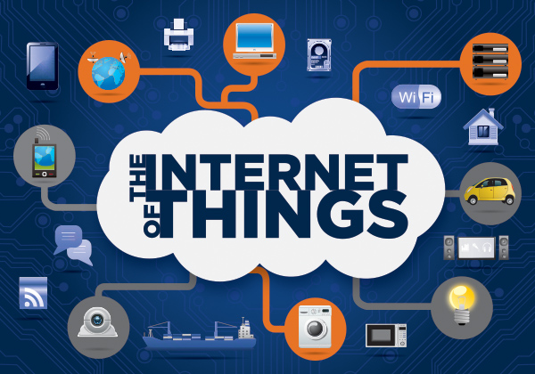

Internet of Things @ Purdue University
OverviewInternet of Things (IoT) is the interconnection and interaction of people, things, process and data. As Gartner estimates there will be 26 Billion IoT units by 2020. This course provides an introduction in concepts, challenges, and recent developments around the IoT and M2M. The students will be exposed to the fundamental issues that arise in the operation, design and management of IoT networks. Such issues include business objectives and technical design requirements, IoT building blocks (architectures and reference models), enabling technologies, IoT protocol stacks, analytics, security and privacy. Students will understand the fundamental issues in the operation, design and management of IoT networks and enabling technologies, identify tools that help an administration perform such tasks, obtain business requirements regarding an IoT system and translate these requirements into technical specs, and finally design an IoT system. Instructor: Ioannis Papapanagiotou  Topics Covered
SkillsetTraditionally, a network specialist in an IT department of an enterprise was expected to have skills in the topics of Device configuration, continuous operation, problem solution, hands-on repair deployment, and reactive management skills. On the other hand, a software developer was employed to develop the software to support, and manage the applications.
In the IoT setting, these job roles are shifting towards Business/IT innovation, architecture (End-to-End) design, network analytics & optimization, programming API vs CLI, comprehensive policy management, and proactive management tasks. In this course, we will focus on (a) the administrator of an IoT system, and (b) the designer/architect of an IoT system.
AudienceThe target audience will be students with interest in computing, distributed systems, programming, machine 2 machine (M2M) connections, Machine 2 people (M2P) connections, embedded systems, computer networks. Hands on LabsA number of sensors, Systems on Chip (Raspberry PIs, Intel Galileo 2, Qualcomm Snapdragons and NVIDIA Tegra TK1) and Apple iBeacons will be available to students for prototyping. The students will select across a variety of projects. There will also be industry sponsored projects. The goal of the selected project is to develop the ability to read new protocols; gain experience programming sensors; develop protocol design skills. Guest Speakers and SponsorsAll guest speakers are announced during the semester to the registered students in Blackboard. If you wish to sponsor an IoT project, give a talk, or provide feedback please contact me: ipapapan {at} purdue {dot} edu |
|